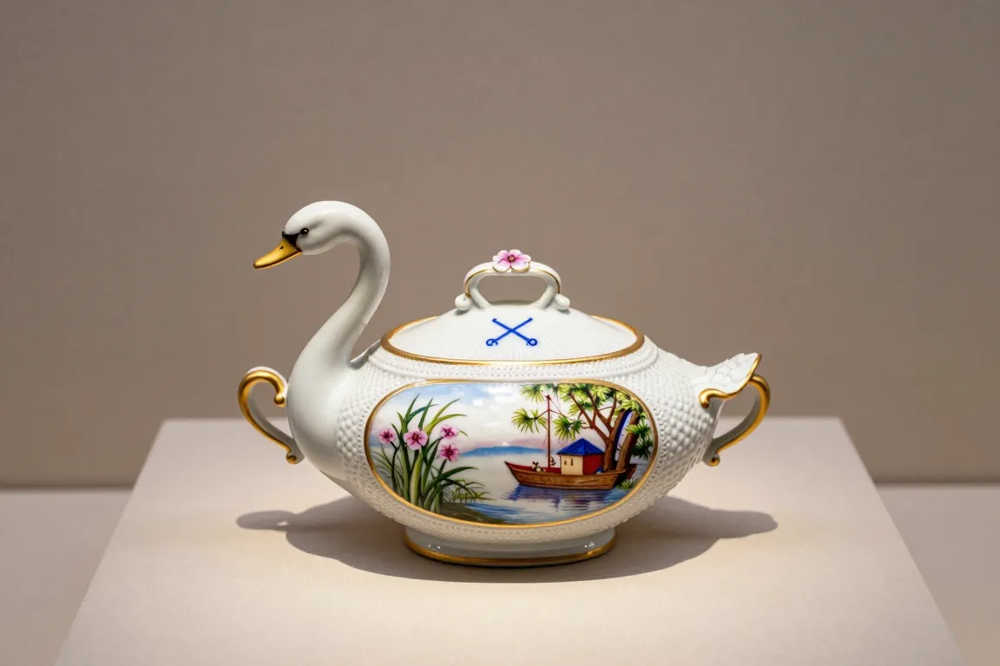

The first true European hard-paste porcelain. The factory at Meissen paints it with a bright enamel palette, models it in full baroque relief, and gilds the edge, for the court of Saxony.

Core thesis
Once Europe can make porcelain, it shows the fact: a white body that is modelled in a sculptural mass and painted in every enamel colour.
Design principles
Fire the hard paste at 1400 °C in reduction so that it turns dense and translucent.
Paint with a palette of 10 or more overglaze enamel colours, and fire them at 800 °C.
Model the form in relief: swans, shells, reeds, and applied flowers, as in a sculpture.
Divide a plate into a moulded rim and a painted well; add gold on the edge.
Paint harbour scenes, Chinese figures and flowers in panels called reserves, framed by gold scroll work.
Mark the base with the crossed swords, painted in cobalt under the glaze.
Make the whole service for one patron, with his arms or his initials on each piece.